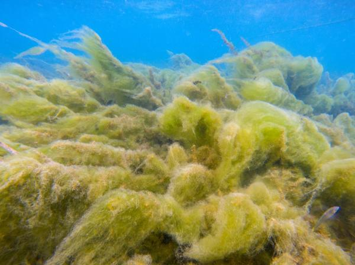
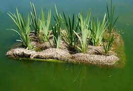
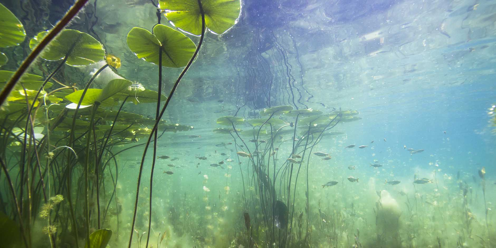
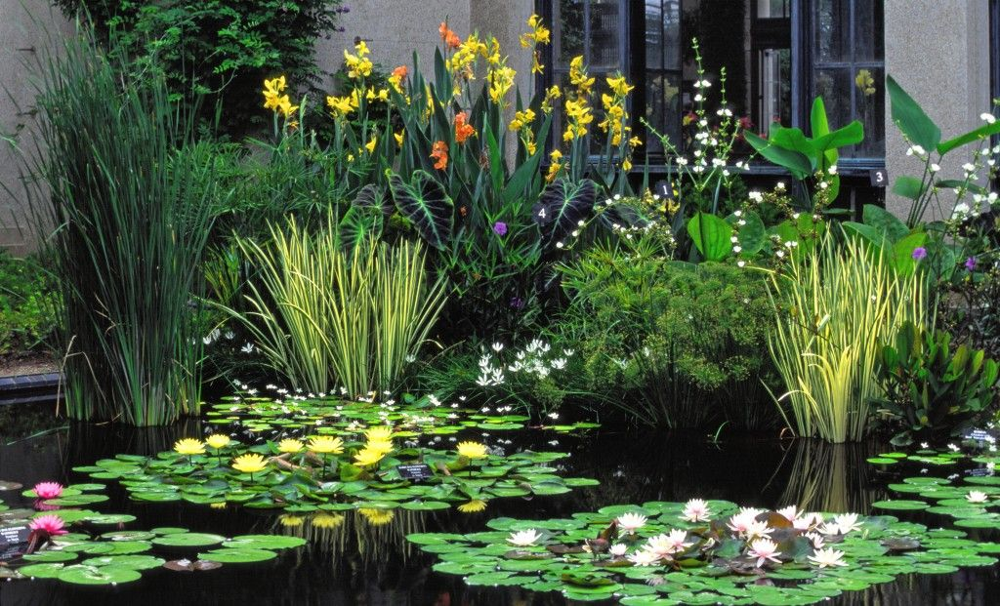

CLASIFICACIÓN
Dentro de las especies vegetales encontramos una de las más comunes que son:
1- El fitoplacton.
Forman parte de la especie del placton. Los cuales viven flotando sobre el agua y son capaces de realizar la fotosíntesis. Son de vital importancia dado que son los productores primarios más importantes que podemos encontrar en los océanos presentando una gran biodiversidad y diferentes especies atendiendo a las condiciones naturales de la zona. Se distribuyen por todos los océanos y mares del planeta Tierra cuya función primordial es el mantenimiento de la cantidad de oxígeno en el océano y el atmósfera.

2-Las algas.
Las algas son auténticas verduras de mar, con los mismos ciclos naturales que las plantas terrestres, pueden crecer en aguas dulces o saladas. Se alimentan de la luz solar (fotosintéticas), se pueden encontrar a nivel del mar o en las profundidades formando grandes bosques marinos.

Clasificación de las plantas acuaticas:
• Plantas acuáticas de ribera.
Son plantas halladas en la orilla de ríos, lagos o estanques, por esto también se las conoce como plantas acuáticas de margen. Las raíces están sumergidas en el agua y el resto del cuerpo se encuentra fuera de la superficie acuática. También son conocidas como plantas de transición porque se mantienen vivas fuera del agua gracias a un riego frecuente.

• Plantas acuáticas flotantes.
Son plantas cuyas raíces están permanentemente sueltas en el agua, por lo que flotan y son desplazadas por la superficie por el propio movimiento del agua, el viento o por el de los animales que habitan la zona.

• Plantas acuáticas de aguas profundas.
Se encuentran en las zonas más hondas del agua. Estas son algunas de las plantas acuáticas con flores, como los nenúfares, ya que, si bien sus raíces están ancladas en el suelo en el fondo del lago o estanque, y por ello se las conoce como plantas de aguas profundas, crecen hasta salir a la superficie, donde algunas especies desarrollan más hojas y también flores.

• Plantas acuáticas oxigenadoras.
Son aquellas plantas que funcionan como si fueran un filtro del agua muy potente y con una velocidad alta de crecimiento. Absorben el dióxido de carbono y los minerales del agua y expulsan oxígeno en esta, por lo que ayudan a mantenerla clara. Además, ayudan a regular la proliferación de las algas y se encuentran totalmente sumergidas en el medio acuático.
